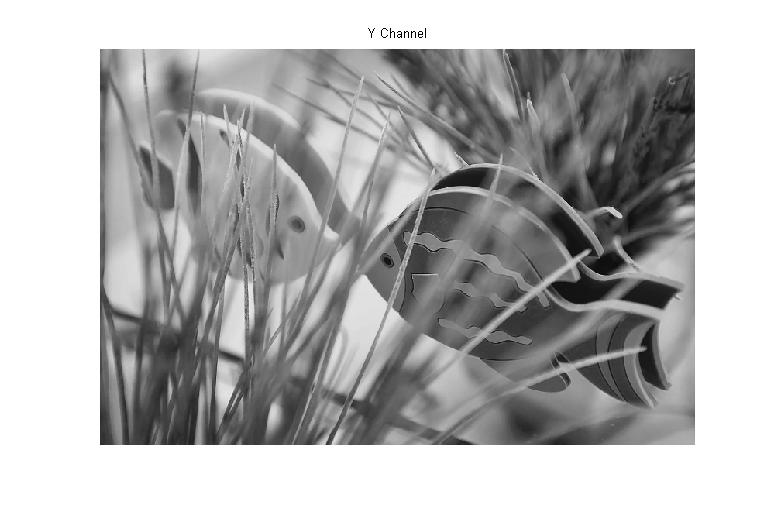
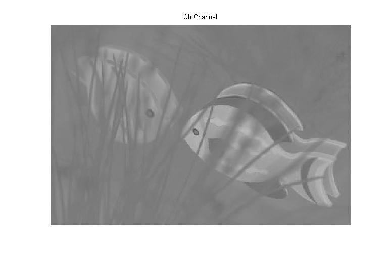
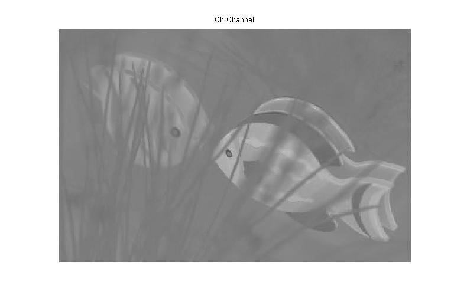
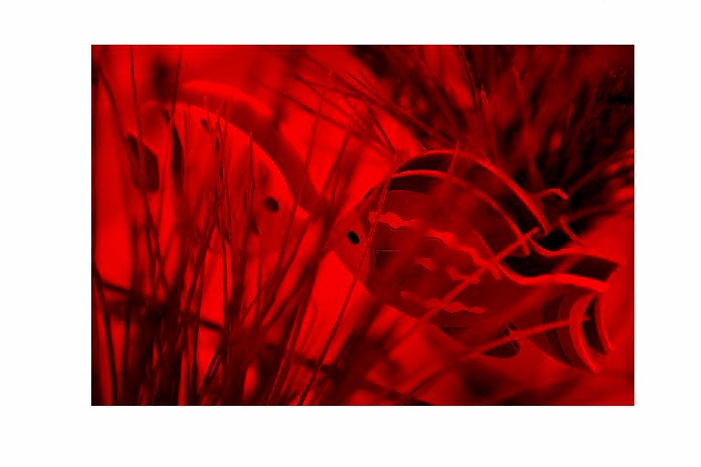
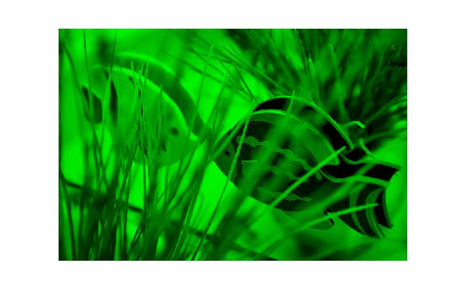

| DiscreteWavelets Toolbox |
Convert from YCbCr space to RGB space
A=YCbCrToRGB(B)
A = YCbCrToRGB(B) takes either a vector of length 3 or a three-dimensional array with depth three and converts the input to RGB space.
A = YCbCrToRGB(B,'DisplayMode','True') scales the conversion for display with Matlab's image or ImagePlot. In this case,
A is assumed to be a three-dimensional array.
If B is a length 3 vector, then the 0 <= B(1) <= 1 and -.5 <= B(2),B(3) <= .5.
If A is a three-dimensional array, then its depth must be three and it is assumed that the red, green, and blue channels are contained in A(:,:,1), A(:,:,2), and A(:,:,3), respectively. The elements of A(:,:,1) must be integers y in the range 16 <= y <= 235 and the elements of A(:,:,2) and A(:,:,3) must be integers i in the range 16 <= i <= 240.See Section 3.2 for more information on color space conversion.
Convert the YCbCr vectors to RGB space.
v=RGBToYCbCr([1 0 0])' red=YCbCrToRGB(v)' w=RGBToYCbCr([0 0 1])' blue=YCbCrToRGB(w)'
produces
v =
0.0012 -0.0007 0.0020
red =
1.0000 0.0000 -0.0000
w =
0.0004 0.0020 -0.0003
blue =
0.0000 0.0000 1.0000
Convert Y Cb Cr channels to RGB space.
clr=ImageNames('ImageType','Color'); %Get names of all color images included with the toolbox
A=ImageRead(clr{5}); %Read a color image
B=RGBToYCbCr(A,'DisplayMode','True'); %Convert to YCbCr space
[Y,Cb,Cr]=Split3D(B); %Get the channels
ImagePlot(Y,'Title','Y Channel'); %Plot the Y channel
figure
ImagePlot(Cb,'Title','Cr Channel'); %Plot the Cr channel
figure
ImagePlot(Cr,'Title','Cb Channel'); %Plot the Cb channel

 

Now convert to YCbCr space and plot the resulting images
A=YCbCrToRGB(B,'DisplayMode','True'); %Do the color space conversion [R,G,B]=Split3D(A); %Split A into the three channels figure ImagePlot(R,'ChannelColor',[1 0 0]); %Plot the red channel figure ImagePlot(G,'ChannelColor',[0 0 1]); %Plot the green channel figure ImagePlot(R,'ChannelColor',[0 0 1]); %Plot the blue channel figure ImagePlot(A); 
© 2007-2008 Patrick Van Fleet